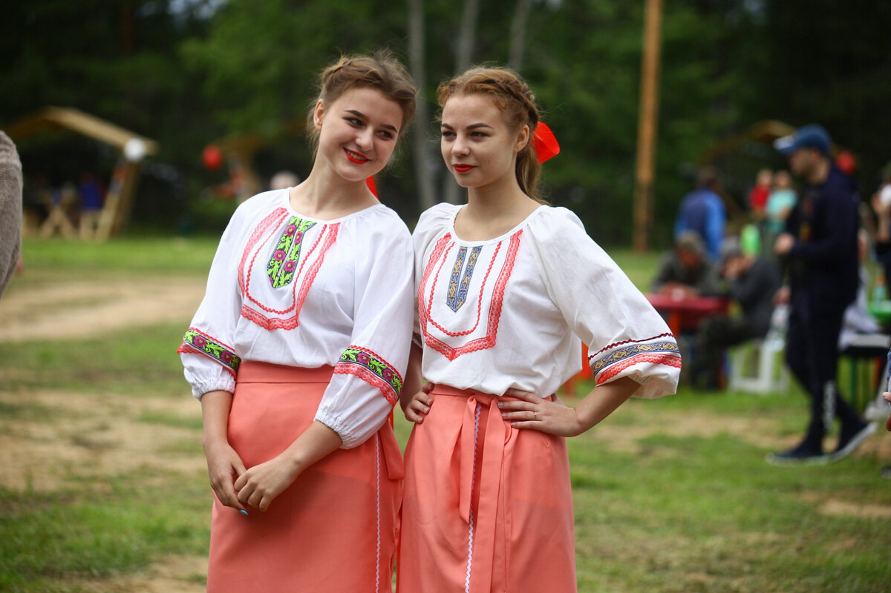
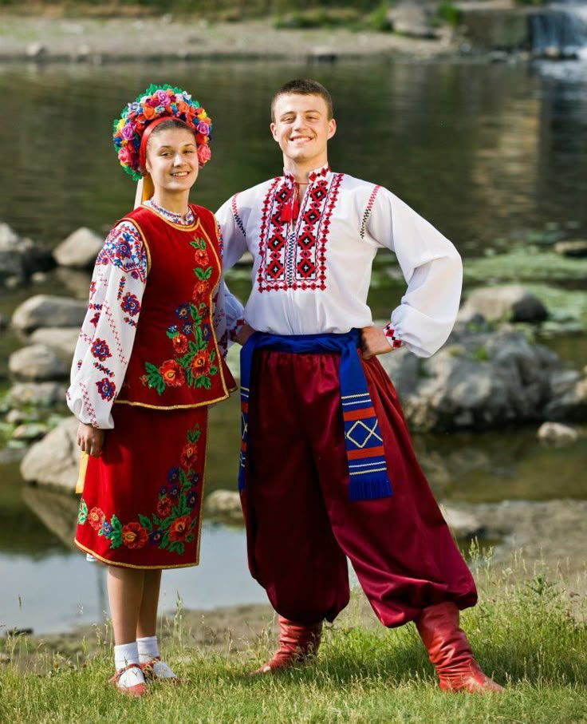
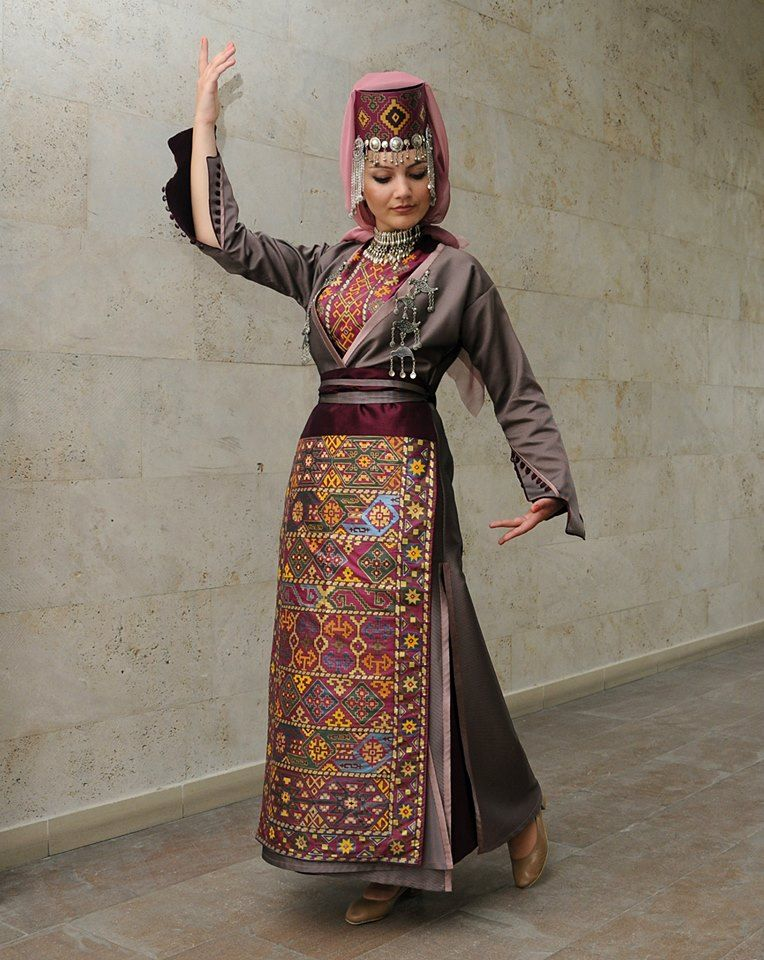
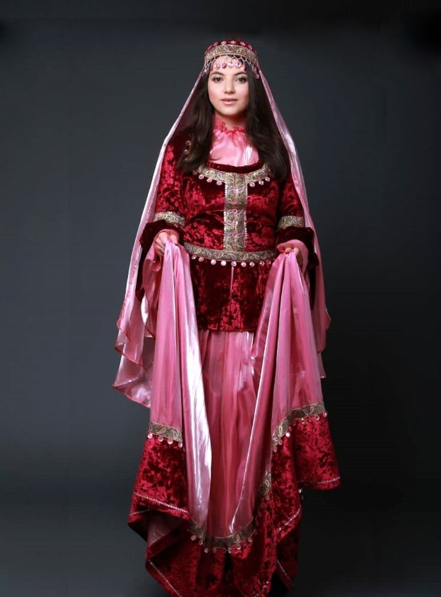
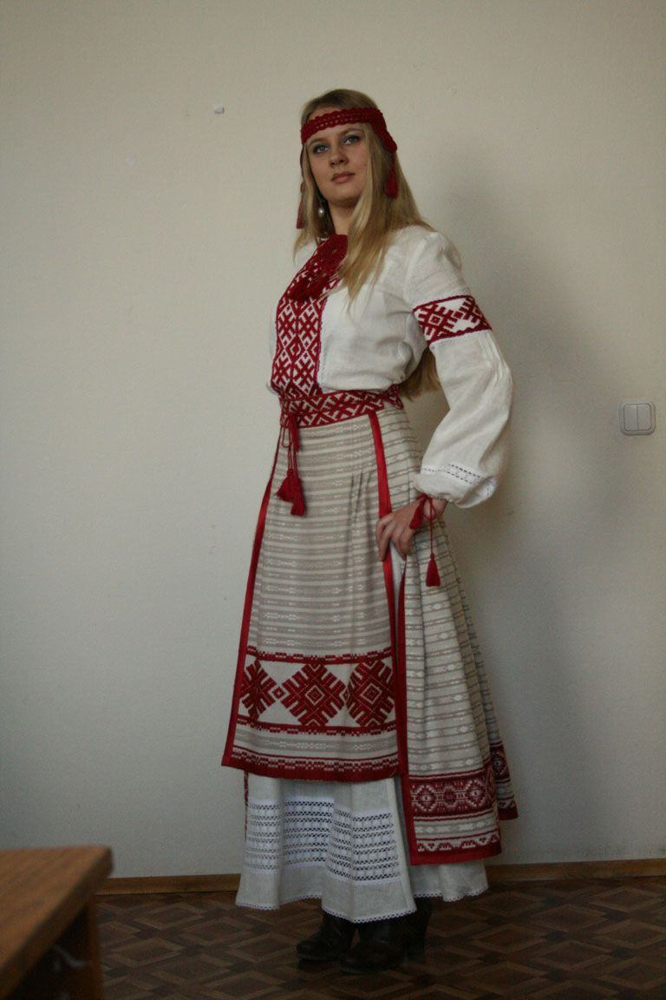
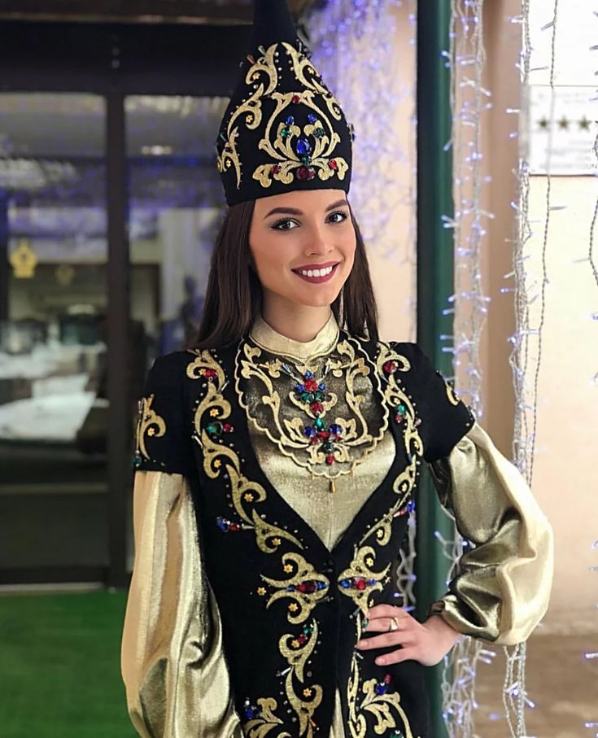
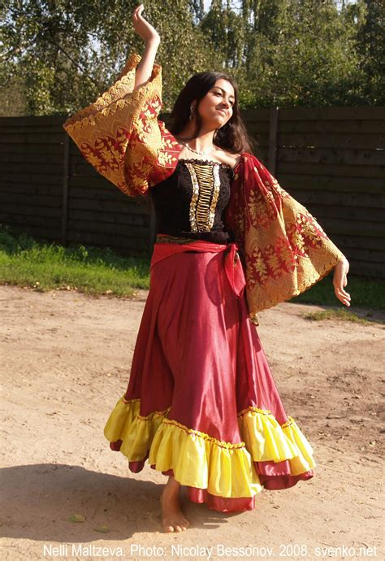

Этнокультурная панорама региона
Тверская область демонстрирует классическую модель, где русское население составляет основу во всех сферах экономики. Тверские карелы сохранили свою традиционную сельскохозяйственную и лесную специализацию. Народы Кавказа (армяне, азербайджанцы) в новой среде проявили предпринимательскую жилку, заняв четкие экономические ниши в торговле и сфере услуг. Украинцы и белорусы полностью интегрировались в местную экономику. Татары исторически и сегодня ориентированы на торговлю и бизнес, а цыгане сохраняют наиболее самобытные и специфические виды занятий.
Промыслы и ремесла народов Тверской области

Русские промыслы
Тверская земля — один из старейших центров русской ремесленной культуры, где промыслы были тесно связаны с природными ресурсами и торговыми путями.
Торжокское золотное шитьё
Уникальный промысел, известный с XIII века. Вышивка производится золотыми, серебряными нитями, канителью по сафьяну, бархату или сукну. Сохранился до наших дней на фабрике «Торжокские золотошвеи».
Калязинское кружево
Плетение на коклюшках, известное с XVII века. Отличается сложными геометрическими узорами, легкостью и изяществом. Сегодня энтузиасты и мастера возрождают это ремесло.
Валдайский колокольчик
Литейное производство было широко распространено в юго-западных районах Тверской губернии. Каждый колокольчик имел уникальное звучание и орнамент.
Льняные промыслы
Тверской лён славился по всей России. Комплексный промысел: выращивание льна, его обработка, прядение и ткачество. Ткали грубый холст, тонкое полотно, узорные скатери и половики.
Гончарный промысел
Центры в селах Медное, Кушалино, Городня. Изготавливали красноглиняную и чернолощеную керамику: горшки, крынки, миски, игрушки-свистульки.
Конаковский фаянс
Промысел, выросший в крупную промышленность. Производили высокохудожественный фаянс с полихромной росписью, печатью, люстровыми покрытиями.
Кимрский сапожный промысел
С XVI века Кимры и окрестные села — крупнейший центр кожевенного и обувного дела. Вручную шили сапоги, башмаки, поршни.

Промыслы тверских карел
Ремесла карел были приспособлены к жизни в лесном краю и отражали их эстетические традиции.
- Резьба по дереву: Украшали наличники, причелины геометрическим орнаментом (солярные знаки, ромбы, зигзаги)
- Ткачество: Техники браного и закладного ткачества с красно-белыми и красно-синими цветовыми гаммами
- Плетение из бересты и корня сосны: Туеса для хранения продуктов, корзины, солонки, лапти
- Войлоковаляние: Из шерсти овец катали войлок для одежды, обуви и предметов быта

Украинцы
Промыслы:
- Декоративная роспись
- Вышивка (вишивка)
- Гончарство
Изделия:
- Вышиванки
- Рушники
- Расписная керамика

Армяне
Промыслы:
- Ковроткачество
- Ювелирное дело
- Резьба по камню
Изделия:
- Ворсовые ковры
- Серебряные украшения
- Декоративные хачкары

Азербайджанцы
Промыслы:
- Ковроткачество
- Изготовление медной посуды
- Шелкоткачество
Изделия:
- Халы (ковры)
- Чеканные кувшины
- Шелковые платки

Белорусы
Промыслы:
- Соломоплетение
- Ткачество
- Гончарство
Изделия:
- Обереги-пауки
- Узорные рушники
- Чернолощеная керамика

Татары
Промыслы:
- Кожевенное дело
- Ювелирное искусство
- Золотная вышивка
Изделия:
- Ичиги (обувь)
- Тюбетейки
- Серебряные украшения

Цыгане (Рома)
Промыслы:
- Кузнечное дело
- Торговля лошадьми
- Музыкальное искусство
Изделия:
- Кованые изделия
- Музыкальные перфомансы
Сводная таблица: Промыслы народов Тверской области
| Народ | Ключевые промыслы и ремесла | Характерные изделия |
|---|---|---|
| Русские | Золотное шитье, кружевоплетение, литье колокольчиков, льняное ткачество, гончарство, фаянс, кожевенно-обувной промысел | Вышитые картины, кружевные воротники, колокольчики, холсты, половики, глиняная посуда, фаянсовые сервизы, сапоги |
| Тверские карелы | Резьба по дереву, узорное ткачество, плетение из бересты, войлоковаляние | Резные наличники, узорные полотенца, туеса, корзины, валенки |
| Украинцы | Декоративная вышивка, роспись, гончарство | Вышиванки, рушники, расписные тарелки, глечики |
| Армяне | Ковроткачество, ювелирное дело, резьба по камню | Ворсовые ковры, серебряные украшения, декоративные хачкары |
| Азербайджанцы | Ковроткачество, изготовление медной посуды, шелкоткачество | Халы, чеканные кувшины и подносы, шелковые платки |
| Белорусы | Соломоплетение, ткачество, гончарство | Солнечные обереги-пауки, узорные рушники, чернолощеная керамика |
| Татары | Кожевенное дело, ювелирное искусство, золотная вышивка | Ичиги, тюбетейки, серебряные украшения, сафьяновые шкатулки |
| Цыгане (Рома) | Кузнечное дело, торговля и дрессировка лошадей, музыкальное искусство | Кованые изделия, музыкальные перфомансы |
Культурное наследие Тверской области
Промыслы Тверской области создают богатейшую многонациональную палитру ремесел. Если русские промыслы (золотная вышивка, кружево) стали визитной карточкой всего региона, то ремесла других народов (карельская резьба, татарское ювелирное дело, цыганская ковка) сохраняют свою уникальную этническую идентичность и являются живым наследием, передаваемым из поколения в поколение.
Многие из этих промыслов сегодня активно возрождаются благодаря энтузиастам и национально-культурным автономиям, составляя неотъемлемую часть культурного богатства Тверского края.